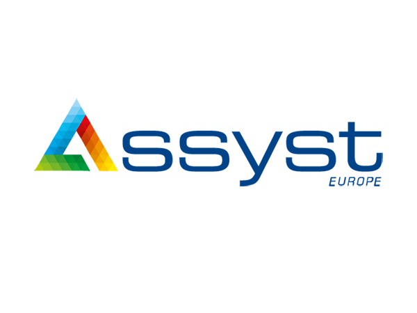
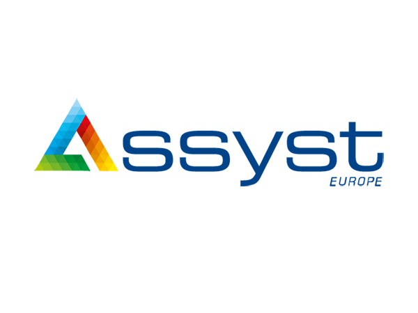

1h30 | PRÉSENTATION STAGE

1h30 | PRÉSENTATION STAGE

14 octobre 2019
Durée : 1h30
Ayant déjà rencontré Assyst Europe lors de l'IT Job Day, parmi d'autres, leur entreprise ne m'était pas inconnu.
Cette présentation à abordé plusieurs aspects :
Ce qui m'a particulièrement plu est l'approche différente de Mme Sanaa NOISET.
En effet, elle n'a pas hésité à mettre tout le monde à l'aise en expliquant les attentes générales de toute entreprise à la recherche d'un stagiaire mais également à nous montrer à quel point nous avons une base de connaissances ouvrant de nombreuses portes, une ouverture d'esprit et une crainte de l'inconnu pouvant être facilement géré.
Les stages proposés ont un point en commun : l'intelligence artificielle.
L'un est axé sur l'IoT (Internet of Things), l'autre axé sur la sécurité réseau.
Le projet IoT consiste en la conception d'une carte électronique existante, ou non, permettant la géolocalisation d'un colis, utilisant un protocole de communication style LoRaWAN et ayant une grande autonomie.
Le projet sécurité réseau consiste en la réalisation d'une étude technique de marché et l'implémentation de la solution retenue. Il s'agit de la sécurisation d'une infrastructure ou d'un parc informatique d'entreprise autonome.
Ayant eu quelques entrevues pour des stages avant leur présentation ne s'avérant pas concluant ou ne m'intéressant pas autant que ce que je l'aurai pensé, leurs sujets de stage m'ont interpellé.
Il ne m'a pas fallu longtemps pour reprendre contact avec eux et conclure mon stage sur le projet de sécurité réseau.
Cette présentation d'Assyst Europe m'a été fort bénéfique sur de nombreux points.
La crainte de ne pas avoir les prérequis pour un quelconque stage, la crainte d'être mis à un bureau et travailler de façon autonome durant toute la durée du stage, etc.
Toutes ces craintes se sont envolées grâce aux paroles de Mme Sanaa NOISET et de l'ancien étudiant EPHEC ayant fait son stage chez eux et travaillant aujourd'hui pour eux.